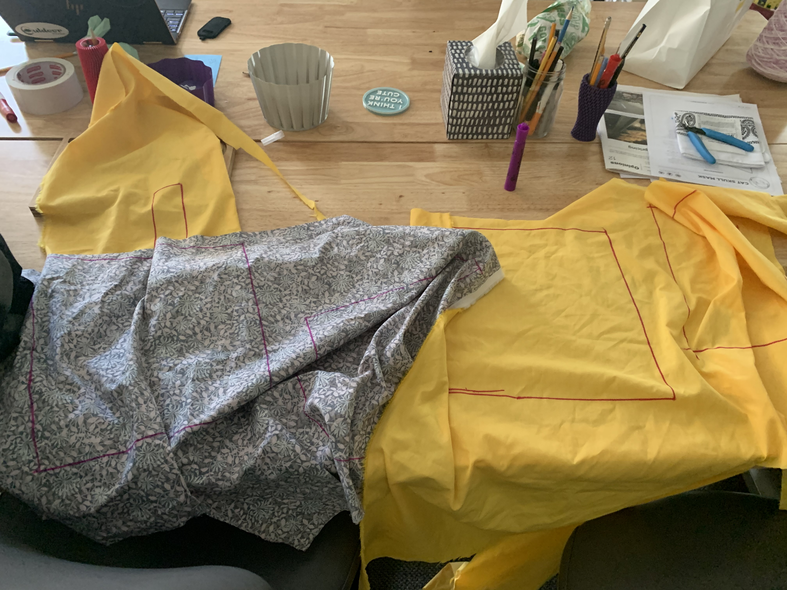

Welcome to the world of Digital Embroidery, where we use a very expensive sewing machine to trick people into thinking I know how to sew! The digital embroidery machine is what I would expect to get if a standard machine and an IPad got married and had a child...and both parents spoiled the kid and he grew up to be a very very moody adult
My design process started off pretty swell. I had some great aspirations, but they were crushed by my lack in artistic ability and the constraints of the machine, I know from Vinyl Cutting that a more complex design isnt always the best. My original goal was to use the drawstring bag as a Driver Head Cover for the new set of golf clubs I inherited, and the idea was the have a golf club and a tea cup on it that said "Tea Time". That idea was shut down because I cant design it, and becuase it doesnt connect to a bussiness. My next idea was to do Twin Pines, the name of the Driving Range in Epping NH I go to a lot, but again I cant design that. My mind stayed on the twin theme as I went for Two Hills, two hills I see on my ride to work in the morning on route 101, but I couldnt make that not look like a butt. I decided to make the hills taller and pointer and alacazam, Twin Peaks.
Designing my mountains in Adobe Illistrator was a very simple process, both because I've gotten very familiar with the program at this point, and becuase Mountains were one of the 4 things I learned how to draw in 3rd grade. I used the Line tool to draw a triangle, and then drew a slightly smaller one next too it. Too add a bit of extra detail I added a snowcapped area of the mountains. This helped too becuase I needed to use a second color in the design, and adding white snow would help me fuffil that requirement. The next step was too add the text. I picked a cool classy font that looked fit for golfing and imported it into Illistrator, and after typing the word Twin and the word Peak's I converted the text to outlines. After this all I had to do was resize and tilt the text until I had something that looked presentable.
I moved my SVG over to Premier+ and got my text all set up. This was another straight foreward process, I used the two tools in the top right to select my design and too pick the right settings. I had heard some horror stories about how tempermental the Embroidery machine could be, so I went with a very simple design using only two colors, black for the outline and white for the snow. I had no idea that the machine would percive this kind act as weakness, and it would make me pay for it
The first step was too cut out my materials for the design. Most Driver Covers are black and boring, and I wanted something that was the exact oppisite of that. My friends and I really hate how uptight golf culture is, and I wanted a Driver Cover that would turn heads, and disrupt the establishment. I choose a loud blue pattern for my base layer, and bright yellow for the second color, knowing from the beggiing that what I was making was going to be hideous...but in a good way....like me! I found a drawstring design tutorial online that was even easier then the one we had linked from the class website, and decided to use it not only becuase it was easier, but becuase there would only be one string involved which makes it easier for it to fit over the head of a golf club quickly.
After cutting my fabric according to project specs with some of the heftiest sizzors I've ever weilded, It was time to get embroidering. I took the louder of the two fabrics over and laid it into the machine, which is where I hit my first roadblock with the 12in hoop breaking. I persevered, and after threading the machine I was ready to get going....until the thread broke litterally 5 stitches later. But I persevered and after getting the machine threaded it was time to get goin....until the thread broke 8 stitches later. This trend of faluire continued on for like 20 minutes before I talked to Steve and he started trying things to fix it. The solution we came up with that worked the best was to put it in turtle mode. Steve said to include in my report that this was the slowest he's ever seen the machine move. The end product was....disspointing. While technically yes there is an embroidery there that shows my design it looks like such hot garbage that I dont think I'll be showing it to anyone. The Twin Peaks text came out all jumbled together because the Embroidery Machine didnt like the font I picked.
All I had left was to piece my bag together, and based off of how moody the machine was earlier I decidede to just use the regular machnie. This was something that I hadent done in quite some time, but with a little help from the great fab lab staff I was able to get something that at least slightly resembled a drawstring bag!
A view of what this my driver cover will look like in use, with my guitar standing in for my golf club